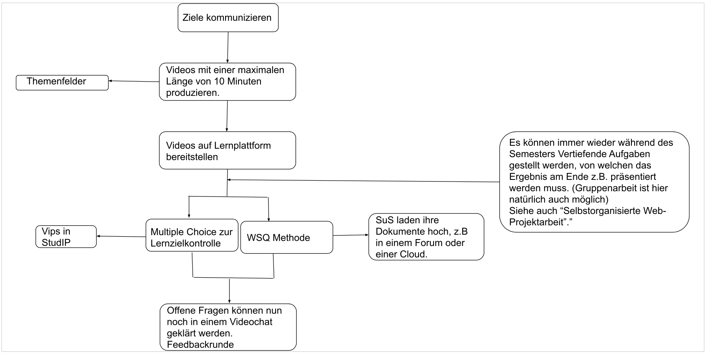

Flipped-Classroom
Flipped Classroom (auch Umgedrehter Unterricht bzw. Inverted Classroom) bezeichnet ein pädagogisches Modell des Blended-Learnings (Mischung von E-Learning und Präsenzlehre). Dieses Modell versucht, die traditionelle Kombination von Vorlesungen gefolgt von Hausaufgaben oder häuslichen Übungen gezielt umzukehren, ersetzt also den Lehrer-zentrierten Ansatz durch einen eher Lernenden-zentrierten Ansatz.
Die allgemeine Idee des Flipped Classroom besteht darin, dass die Lernenden sich im Voraus eigenständig auf den Unterricht vorbereiten, indem sie sich Inhalte zu Hause erarbeiten mithilfe kurzer vorab aufgezeichneter Videos. Durch diese neue Rhythmisierung kann die Zeit in der Lehrveranstaltung effektiver für die aktive Teilnahme durch Übungen, Projektarbeit, Diskussionen usw. genutzt werden. Dabei muss gut geprüft werden, wann ein Input durch den Vortragenden in der Präsenzphase durch ein Video ersetzt werden kann. Ziel ist es, den Wissensinput durch frontale Instruktion größtenteils aus der Präsenzphase heraus zu verlagern. Damit wird möglichst viel Raum für eine tiefere und komplexere Durchdringung der Lernstoffes geschaffen.
Die Flipped Classroom-Methode darf sich aber nicht auf “Video schauen” und eine anschließenden Fragerunde beschränken (vgl. Videotutorial). Benötigt wird ein konsistentes System aus Wissensvermittlung, Lernzielkontrollen und vertiefenden/weiterführenden Aufgaben.
Leitfaden
Vorbereitungsphase
Bekanntgabe der Ziele mit den Teilnehmenden: Welcher Wissenszuwachs ist angestrebt und woran zeigt sich dieser Zuwachs? (an der PHKA bieten sich hierfür die StudIP-Funktionen “Informationen”, “Ankündigungen” oder das Forum selbst an) Zu jedem Themenfeld bzw. zu jedem inhaltlich abgeschlossenen Themenkomplex werden Videos von max. 10 Minuten auf die Lernplattform gestellt. Die Anzahl der Videos liegt im Ermessen des Vortragenden.
Lernzielkontrolle und Fragestellung
Zu jedem Video sollte ein Multiple Choice-Quiz zur Lernzielkontrolle angeboten werden (z.B. via der StudIP-Funktion “Vips”) sowie eine Möglichkeit für Feedback an den Lehrenden. Optional: Die Lernenden fassen hinterher das Themenfeld mit der WSQ-Methode (Watch, Summarize, Questions) schriftlich zusammen, z.B. in einem begleitenden Forum oder in einem cloudbasierten Dateiverwaltungstool wie bwSync&Share/Google Drive). Hier formulieren die Lernenden auch ihre Fragen.
Offene Fragen klären
Mit einem Videokonferenzsystem (z.B. BBB oder Rocket.chat) werden die Fragen der Studierenden live besprochen. In BBB besteht dabei die Möglichkeit, Gruppenräume, sogenannte breakout rooms, zu nutzen. Anschließend teilen Gruppensprecher und Gruppensprecherinnen*innen die wichtigsten Antworten mit der Gesamtgruppe und klären noch offene Fragen mit dem Dozierenden.
Vertiefende Auseinandersetzung oder Übung
Der/Die Dozierende stellt eine umfassendere Aufgabe, die nur auf Basis des neu erworbenen Wissens beantwortet werden kann. Die Ziele und Lernprodukte müssen dazu konkret beschrieben werden. Auch muss ausgehandelt werden, welche Präsentationsform hierfür zu wählen ist, z.B. eine gemeinsame Powerpoint-Präsentation.
Reflexion und Nachbereitung
Vorstellung und Besprechung der Ergebnisse (z.B. in einer Videokonferenz) Es können sich Formen der formativen oder summativen Leistungsbewertung anschließen. Z.B. können Studierende einen Reflexionsprotokoll anfertigen und bei der Lehrkraft zur Bewertung einreichen.
Anmerkungen
Schritt 4 und 5 kann beliebig häufig wiederholt werden, um weitere Fragestellungen zu klären.
Ablaufdiagramm
Dieses Ablaufdiagramm soll die Struktur von Flipped-Classroom erklären 